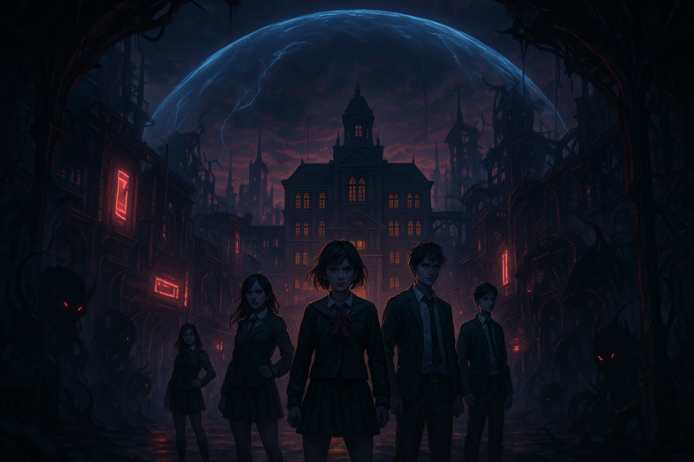

1位

Villion:Code（ヴィリオン：コード）
『女神転生』シリーズの生みの親・岡田耕始氏が企画プロデュースを担う期待の新作学園RPG。人類滅亡の危機に瀕した近未来、「アドバンレジリエンス研究学院都市」に異形の生物「GEM」が出現し、謎の「バブル」で封鎖されてしまう。人の「業」をテーマにした重厚なストーリーと、360度チューブ型3Dダンジョンを舞台にしたスピードアクション×戦術融合のバトルが特徴。ゲノムアームズを駆使した多彩な戦い方が楽しめる。
おすすめ理由：『メガテン』『ペルソナ』生みの親による集大成的タイトル。豪華スタッフが再集結した本格RPGはRPGファン必携の一本。